This guide describes how get use the Eagle schematic designer to add ports from libraries, and connect them together to make your circuit.
Before starting this guide, make sure to have gone through the Eagle Setup guide. There you will have downloaded and installed the files used in this tutorial.
Open Eagle so that you have the Control Panel opened and selected. Go up to File -> New -> Schematic
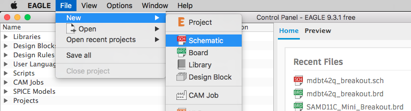You will be shown a blank Schematic editor:
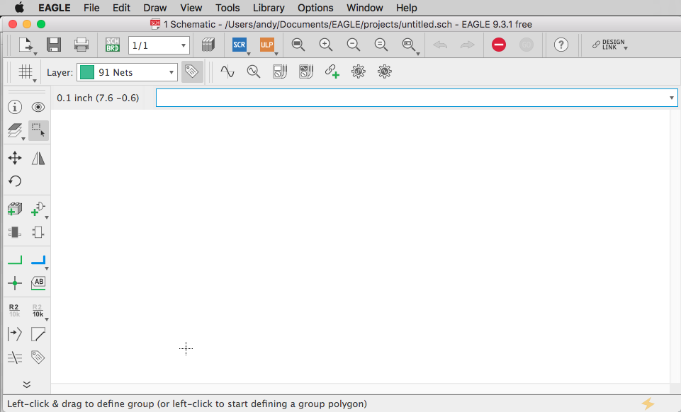Let's save this file somewhere before start working.
Eagle schematic (.sch) files share links with board (.brd) files, so to keep things organized we should create a new folder for this project.
I created a folder on my Desktop called example_project.
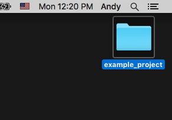Go up to File -> Save (or CMD/Ctrl-S) in Eagle. Give it the same name as the folder. And then save it inside the folder.
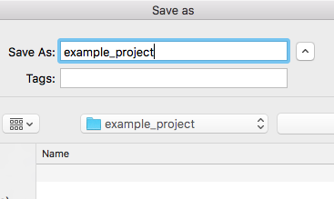Now the top of you schematic file should have that folder and file name in the bar: /Users/andy/Desktop/example_project/example_project.sch
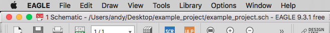In the schematic window, go to the left toolbar and click the Add Part button.
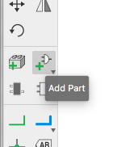This will open a new window, showing you all the installed Parts Libraries on your computer.
Scroll down, and you will find the folder homemade-hardware. If you do not see the folder, make sure you have added the repository to your Eagle Directories.
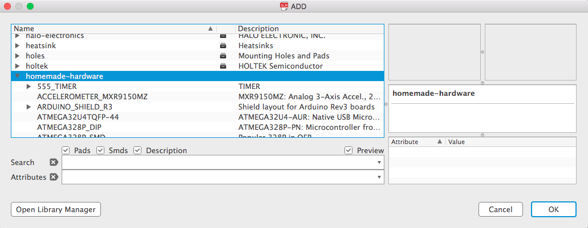Let's look at this library for a minute. The library is built of a list of different electronic components. Some are simple, some are more complex.
Our first part will be the ATtiny85. Scroll down to that part, and select it. Notice a schematic symbol for the ATtiny85 has appeared on the right side.
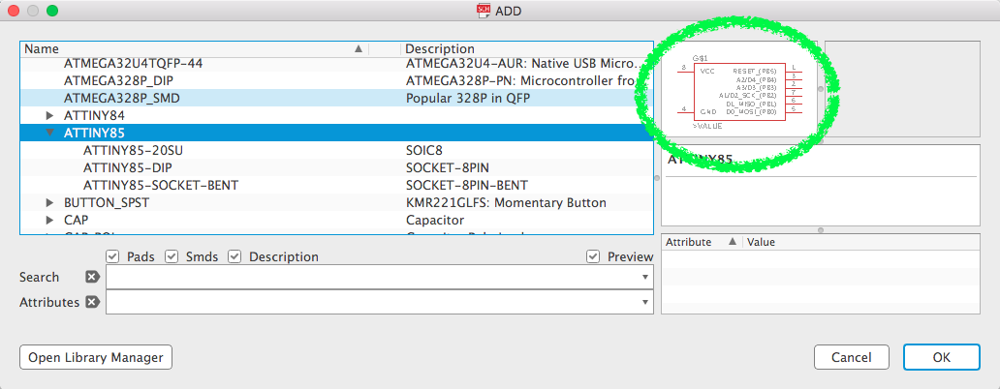This part in the library has multiple "packages", or shapes. All the "packages" are shown in a drop-down menu inside this part. Click the small arrow next to it's name to open the menu.
Click the first on, ATTINY85-20SU.
Notice the picture of it's package has appeared next to the schematic symbols. The package image shows a surface mount (SMD) ATtiny85.
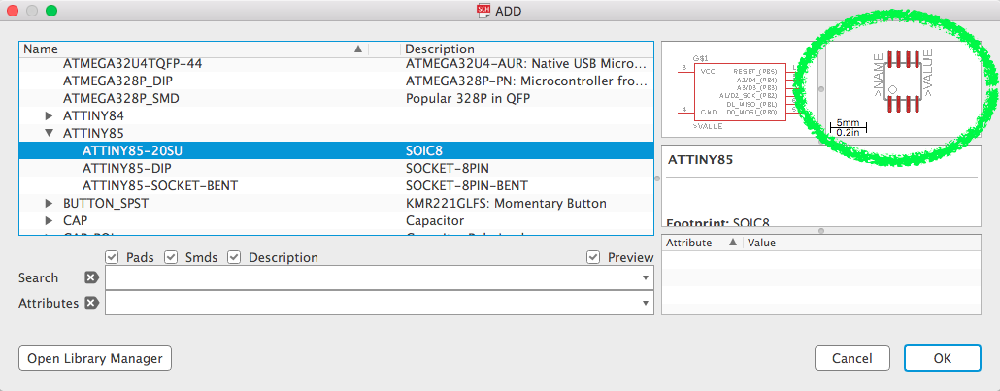Click the next one, ATTINY85-DIP, and the picture changes to a through-hole (DIP) package.
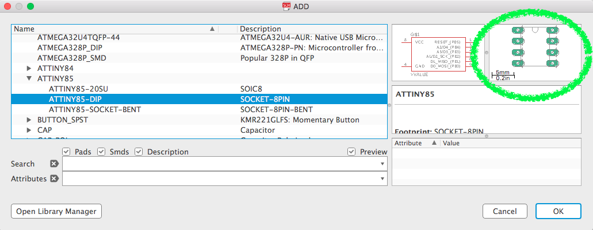Third one, ATTINY85-SOCKET-BENT, is the one that we will be using. Notice it is the same size as the DIP version, however it has red SMD pads it instead of the green DIP holes.
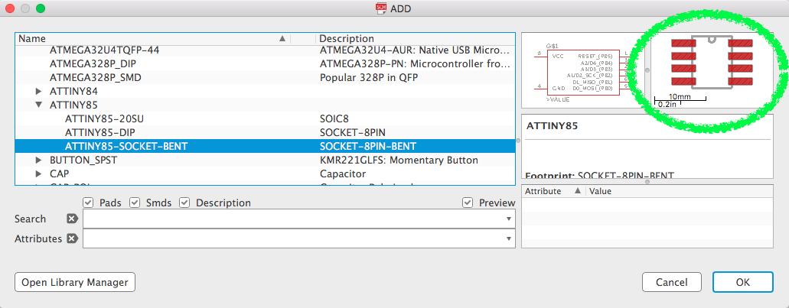Click OK to go back to you schematic window.
You are now moving the part around from it's origin. Click anywhere to add the part. You can click multiple times to add multiple parts.
However, for this guide, I will be using only one ATtiny85.
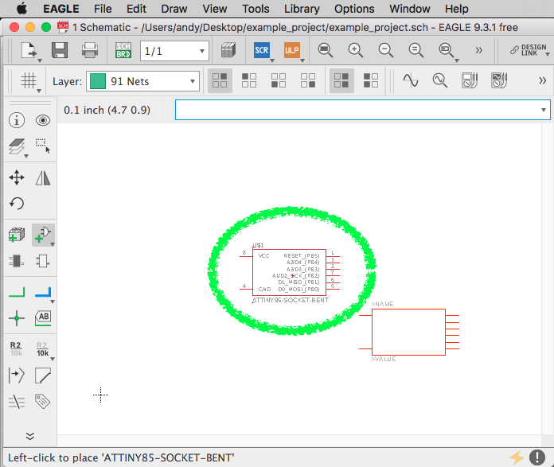After clicking to place a part, you can stop adding parts by pressing the ESC key on your keyboard.
It will then take you back to the Add window to find more parts.
Here is the full list of parts we want to add:
When you are done adding parts, press the Cancel button.
Your schematic should look similar to this, with all your parts spread around.
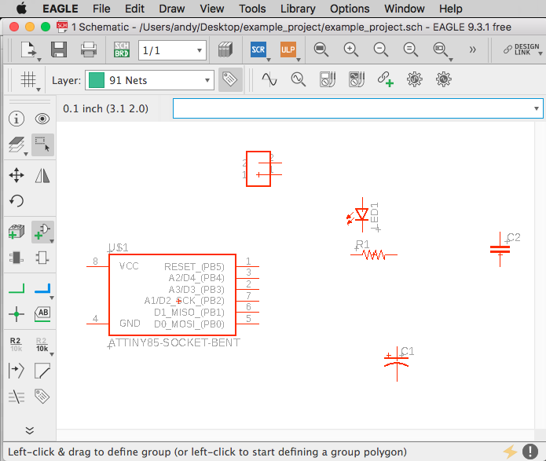You can use the MOVE command to move your parts around. Also the ROTATE command to change their angle (or just use Ctrl-CLICK while moving to rotate 90 degrees).
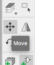 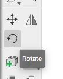 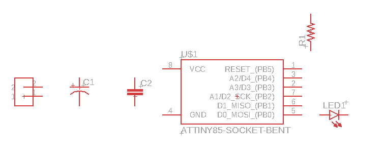Our schematic is missing a resistor for the LED (oh no!). We can copy/paste the other resistor to create a new one.
Select the Group command, and then highlight the resistor we want to copy.
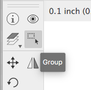Now simply use Cmd-C (or Ctrl-C) to copy, and then Cmd-P (or Ctrl-P) to paste.
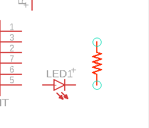Click to drop the part in your schematic. Here is an image of what my schematic looks like now, with that new resistor labeled "R2" in the bottom right.
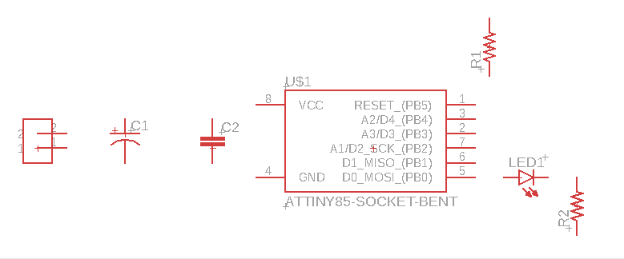We have multiple parts on this board, and we need to keep track of what all of their values are. Is the resistor 10k or 150 ohms? Is the capacitor 0.1uF or 10uF? Is the LED red or green?
We can assign our parts a value with the VALUE command. Click the tool in the left toolbar.
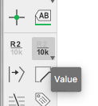With that command selected, try clicking the "polarized" capacitor (it's the one with one flat line and one rounded line)
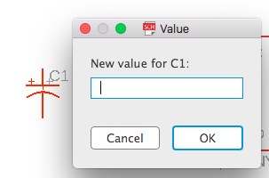 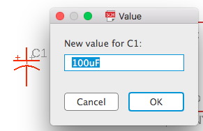 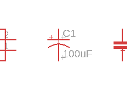Enter the value 100uF, and press OK to save that value to the part. Notive that the value is now visible next to the part in the schematic.
Do the same for the other capacitor, and two resistors. Here is a list of their values:
Now it's time to draw those green lines that connect our parts together. These lines will eventually be turned into copper traces in the board designer.
To draw a green electrical connection, use the NET command.
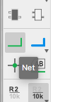In our circuit, the HEADER-2 part will be how power connects to our circuit. One of its pins will be for positive (Vcc), and the other lower pin will be used for negative (GND).
Move near the top pin of the HEADER-2 part (our Vcc pin), and a green circle will appear.
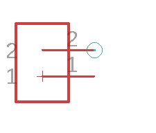Click and release the green circle to start drawing a green electrical connection. As you move your cursor, the green line will follow.
You can create an anchor point by clicking and releasing, then continuing to draw.
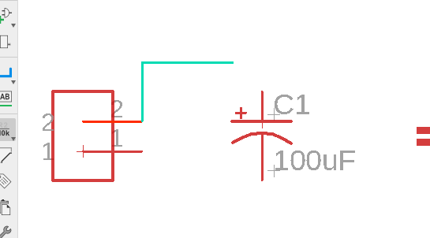To finish the connection, move to the top-left pin on the ATtiny85 (this is the power input pin), and click on where another green circle appears.
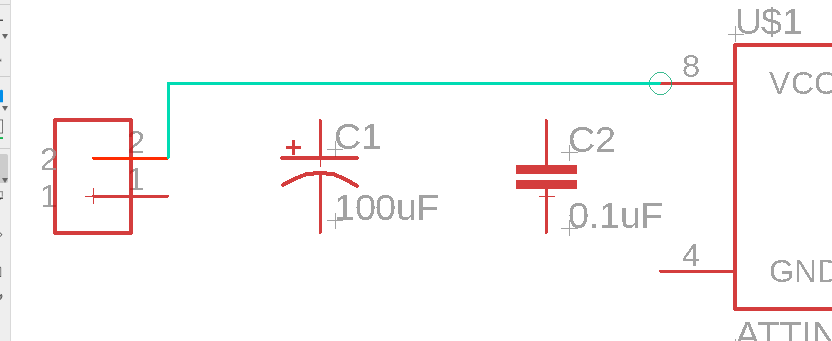Connect the top of both capacitors to this same line, continuing to use the NET command.
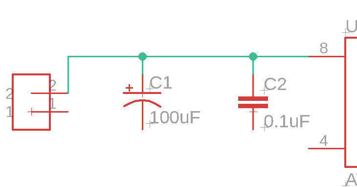Great, now our power (Vcc) line is connected to the ATtiny85, and both capacitors.
Now let's do the same thing, but with the ground (GND) input from the power supply.
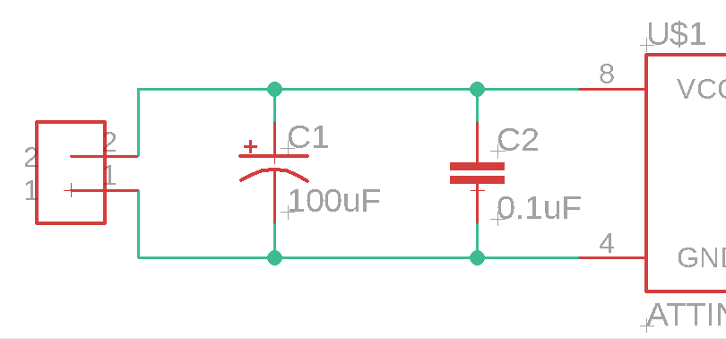Now let's do the rest for all our parts. Here is what we need to do:
Here is what it should look like when you are done.
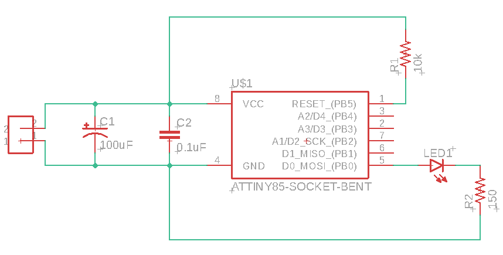